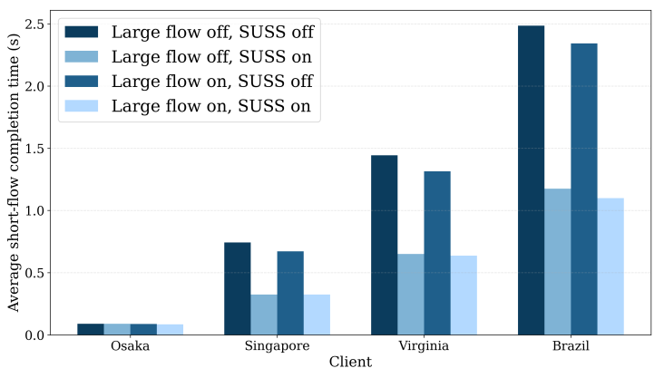
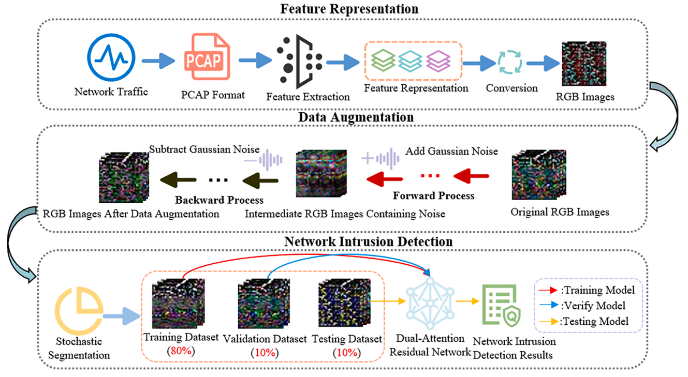

Replicating and Extending SUSS: TCP Slow-Start Acceleration on AWS
Proceedings of the 2026 ACM Internet Measurement Conference (IMC '26), pp. 711–723.
I am a master's student in Computer Science at the University of Pittsburgh. I received my bachelor's degree in Intelligence Science and Technology from Jiangsu University.
My interests are in computer systems, networking, and backend development. At Pitt, I worked with Asst. Prof. Amy Babay on replicating and extending SUSS for TCP slow-start acceleration, including a BBR-based extension in the Linux kernel. My earlier research at Jiangsu University focused on network intrusion detection.
I also build web and Android applications using Java, Spring Boot, and Kotlin. I am seeking Software Engineer roles in backend or systems development.
Our paper on replicating and extending SUSS was published in the proceedings of ACM IMC 2026.
I joined the University of Pittsburgh as a master's student in Computer Science.
Our paper DDP-DAR, on network intrusion detection, became available online in Neural Networks.

Proceedings of the 2026 ACM Internet Measurement Conference (IMC '26), pp. 711–723.

Neural Networks, volume 184, article 107064.